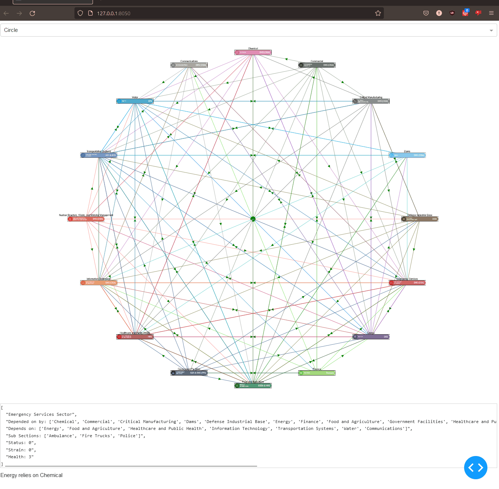

Python Repository
A collection of python programs ranging from graphics usage, classes, objects, and many more -- too many to individually show
You can click the title of project to be taken to the repo
A collection of python programs ranging from graphics usage, classes, objects, and many more -- too many to individually show
Utilized Heroku, Cytoscape.js, Deck.gl, and python in order to create a simulation of a city and their infrastructures for Argonne National Laboratory. Worked with another intern where I focused on the web/python aspect while my partner worked on the unity aspect. Utilized web scraping in order to get list of infrastructures aka list of water stations, power plants, emergency services from websites which was turned into JSON then CSV for my map rendition. The list had addresses of the buildings, which I used to in a geolocating algorithm in order to get their latitude and longitudes.
How infrastructures connect to each other
Example of Energy/Water/Other infrastructures connection to Benicia

Heatmap of infrastructures and further connections